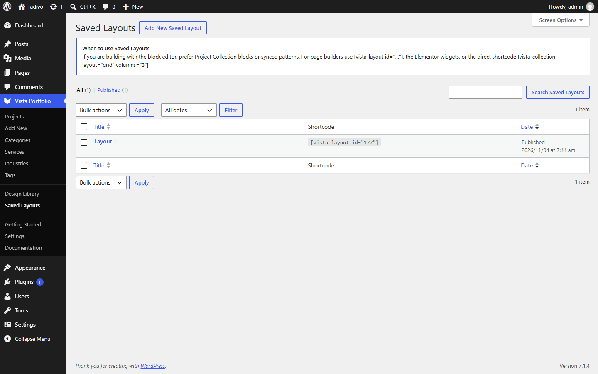

Saved Layouts
Saved Layouts (vista_layout) store a reusable Filter + Collection configuration you can embed anywhere.


- Go to Vista Portfolio → Saved Layouts → Add New.
- Add Project Filter and/or Project Collection blocks and configure them.
- Publish, then copy
[vista_layout id="…"]from the sidebar or list column.
You can also embed with the Saved Layout block or Elementor widget.